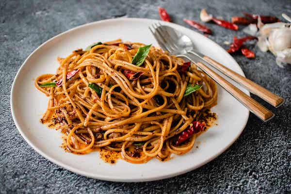

Chili Garlic Noodles

Description
These noodles pack a ton of umami from anchovies and oyster sauce, and
have a beautiful smokiness from the dried chilies. A touch of Thai basil
adds just the right amount of freshness. Serve it on its own, or as a side
to some pan fried fish or chicken! This recipe serves 2 as a side, but 1
generous portion if serving on its own.
Ingredients
- 5.3 oz linguine
- 2 Tbsp neutral oil
- 4 fillets anchovies, minced (see note 1)
- 3 Tbsp chopped garlic
- 0.2 oz dried chilies, see note 2
- 2 Tbsp unsalted butter
- 1 Tbsp oyster sauce
- 15 leaves Thai basil, optional, see note 3
NOTES
-
If the anchovies came packed in olive oil, reserve about 1-2 teaspoons
of this and add it to the noodles at the the end for extra flavour.
-
You can use any type of dried chilies provided the heat level is right
for you. Since we will need to use quite a lot of it so we have lots of
chili flavour, I like to remove some of the seeds before grinding so it
won’t be too spicy. You can also use 2 teaspoons of pre-ground chilies,
provided you’re okay with the heat.
-
I really love how Thai Basil adds a floral freshness to this, but don’t
overdo it, because you don’t want this tasting like a Thai basil stir
fry. Just a touch will do. If you use regular Italian basil, it will end
up tasting very not-Asian, which is fine but not my preference for this
dish. You can also add cilantro instead.
Steps
-
Bring a large pot of water to a boil over high heat and add enough salt
so that the water tastes like a well-seasoned soup.
-
While you wait for the water to boil, remove the seeds and pith from
some or all of the dried chilies depending on how much heat you want (or
maybe don’t remove them at all if you want it spicy!) If your spice
tolerance isn’t high, remove all the seeds and pith, as and you can
always add more later if you want it spicier. 0.2 oz dried chilies
-
Grind the chilies in a coffee grinder or mortar and pestle until mostly
fine; a few bigger flakes remaining is no problem. Measure out 2
teaspoons of the ground chilies, and reserve the rest just in case you
want to add more later.
-
Once the water is boiling, add the linguine and stir to prevent the
noodles from sticking until the water comes back to a full boil again.
Let it cook for 1 minute LESS than the time stated on the package. 5.3
oz linguine
-
Meanwhile, heat a wok on the stove over medium heat and add the oil,
garlic, and anchovies. Gently saute the garlic for 3-4 minutes until it
starts to turn golden. There should be plenty of oil for the garlic to
fry in, so don't be afraid to add a little extra. 2 Tbsp neutral oil,3
Tbsp chopped garlic,4 fillets anchovies, minced (see note 1)
-
Once the garlic is golden, and the anchovies start to pop, add the 2
teaspoons of ground chilies, and cook for another minute until it's
aromatic and smells slightly smoky. Immediately turn off the heat to
prevent the chilies from burning, then add the oyster sauce and the
butter and stir until the butter is melted. If the noodles are not done
at this point, just keep the heat off while you wait for them. 2 Tbsp
unsalted butter,1 Tbsp oyster sauce
-
Once the noodles are done, bring the pot close to the wok and use tongs
to grab the noodles from the pot and into the wok without shaking off
excess water; the excess water will help finish cooking the noodles and
bind the sauce. Turn the heat back to medium and toss the noodles until
they are well coated and all excess water has been absorbed. If you have
any extra olive oil from the anchovies, you can add it at this point.
-
Turn off the heat, and throw in the Thai basil and mix briefly just
until wilted. Taste and adjust the seasoning as needed, and you can add
extra chili flakes for more heat if desired. 15 leaves Thai basil
-
Garnish with a few extra fresh Thai basil leaves and serve on its own or
as a side; it works great with pan fried fish or chicken!